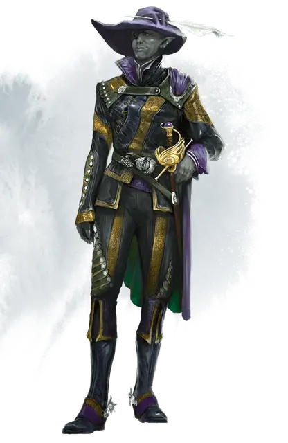

Джарлаксл Баэнр
Jarlaxle Baenre
Средний Гуманоид (Эльф), хаотично-нейтральный, именной НИП

Класс Доспеха 24 (кожаный доспех +3, элегантная защита)
Хиты 123 (19к8 + 38)
Скорость 30 футов
| мод | спас | ||
|---|---|---|---|
| СИЛ | 12 | +1 | +1 |
| ЛОВ | 22 | +6 | +11 |
| ТЕЛ | 14 | +2 | +2 |
| мод | спас | ||
|---|---|---|---|
| ИНТ | 20 | +5 | +5 |
| МДР | 16 | +3 | +8 |
| ХАР | 19 | +4 | +4 |
Навыки Акробатика +11, Атлетика +6, Восприятие +8, Ловкость рук +11, Обман +14, Скрытность +16
Чувства тёмное зрение 120 футов, пассивное Восприятие 18
Языки Общий, Бездны, Дварфийский, Драконий, Подземный, Эльфийский
Опасность 15 (13000 опыта)
Бонус мастерства +5
Особенности
Особое снаряжение. Джарлаксл носит кожаный доспех +3 [armor +3], шапку маскировки [hat of disguise],наручи летающих кинжалов [bracer of flying daggers], плащ невидимости [cloak of invisibility], глазную повязку пройдохи [knave’s eye patch] и кольцо правды [ring of truth telling]. Он сражается рапирой +3 [weapon +3], владеет переносной дырой [portable hole] и волшебной палочкой паутины [wand of web]. В его шапку вставлено перо призыва диатримы [feather of diatryma summoning].
Элегантная защита. Пока Джарлаксл не носит щита и при этом или носит только лёгкий доспех или не носит доспеха вовсе, к его КД добавляется модификатор Харизмы.
Увёртливость. Если Джарлаксл подвергается действию эффекта, позволяющего совершить спасбросок Ловкости, чтобы получить только половину урона, Джарлаксл вместо этого не получает урон, если преуспеет в спасброске, и получает лишь половину урона, если провалит спасбросок. Он не может использовать это умение, если недееспособен.
Наследие фей. Джарлаксл совершает с преимуществом спасброски от очарования, и магия не может его усыпить.
Врождённое колдовство. Базовой характеристикой для врождённых заклинаний Джарлаксла является Харизма (Сл спасброска от заклинания 17, +9 к попаданию атаками заклинаниями). Он может накладывать следующие заклинания, не нуждаясь в материальных компонентах:
• Неограниченно: пляшущие огоньки [dancing lights]
• 1/день каждое: огонь фей [faerie fire], левитация [levitate] (только на себя), тьма [darkness]
Скрытая атака (1/ход). Джарлаксл причиняет дополнительный урон 24 (7к6), если попадает по цели атакой оружием, совершённой с преимуществом к броску атаки, или же если цель находится в пределах 5 футов от дееспособного союзника Джарлаксла, и Джарлаксл совершал бросок атаки без помехи.
Чувствительность к солнечному свету. Когда Джарлаксл не носит свою глазную повязку пройдохи [knave’s eye patch] , Джарлаксл совершает броски атаки с помехой, а также совершает проверки Мудрости (Восприятия), которые зависят от зрения, с помехой.
Мастер настройки. Джарлаксл способен настроиться на пять или менее магических предметов одновременно и может настроиться на предметы, обычно требующие настройки волшебником, колдуном или чародеем.
Легендарное сопротивление (1/день). Если Джарлаксл проваливает спасбросок, он может вместо этого сделать спасбросок успешным.
Действия
Мультиатака. Джарлаксл совершает три атаки с помощью рапиры +3 или две атаки кинжалами, созданными наручем летающих кинжалов [bracer of flying daggers].
Рапира +3. Рукопашная атака оружием: +14 к попаданию, досягаемость 5 фт., Одна цель. Попадание: Колющий урон 13 (1к8 + 9).
Летающий кинжал. Дальнобойная атака оружием: +11 к попаданию, досягаемость 20/60 фт., Одна цель. Попадание: Колющий урон 8 (1к4 + 6).
Легендарные действия
Джарлаксл может совершить 3 легендарных действия, выбирая из представленных ниже вариантов. За один раз можно использовать только одно легендарное действие, и только в конце хода другого существа. Джарлаксл восстанавливает использованные легендарные действия в начале своего хода.
Быстрый шаг. Джарлаксл перемещается на расстояние вплоть до значения скорости, не провоцируя внеочередные атаки.
Атака (стоит 2 действия). Джарлаксл совершает одну атаку +3 рапирой или две атаки кинжалами, созданными наручем летающих кинжалов [bracer of flying daggers].
Описание
Джарлаксл — эксцентричный и задиристый дроу, не признающий авторитетов. Он возглавляет Бреган Д’эрт, клан дроу-отступников, в который входят мужчины-дроу, изгнанные из общества, — обычно отпрыски погибших или опозоренных семейств. Он одарён острым умом, чувством юмора, талантом фехтовальщика и целой горой магических предметов. Джарлаксл внедрился в город Лускан, где царила анархия, навёл там кое-какой порядок и объявил себя его тайным владыкой.
Джарлаксл обожает сплетать сложную паутину планов, чтобы запутать врагов. Его новый план— легитимизировать Лускан, добившись для него членства в Альянсе лордов. Скверная репутация города мешала этому раньше, и нынешние лидеры Альянса заявляли, что Лускану не видать места среди них. Однако Джарлаксл намерен убедить Явного лорда Глубоководья Лейраль Сильверхенд вступиться за Лускан, даже если из-за этого из Альянса выйдет кто-то ещё. Связи Лускана с Глубоководьем повысят политическую и торговую власть Джарлаксла на Побережье Мечей.
Джарлаксл явился в Глубоководье в облике человека-иллусканца по имени Зардоз Зорд. «Капитан Зорд» — хозяин Ярмарки Морских Дев, карнавала, странствующего вдоль Побережья Мечей на трёх судах: «Ненаглядной», «Сердцеедке» и «Чертовке» (схожие определения подходят и Джарлакслу). Большую часть времени он проводит на своём флагмане «Ненаглядной», Два других судна перевозят артистов карнавала и снаряжение для парадов.
Джарлаксл заключил альянс с южным островом Лантан и вооружил своих помощников из Бреган Д’эрт лантанским оружием, использующим дымный порох. Он также заполучил лантанскую подлодку «Алый марпенот».
Подлодка пристыкована под «Ненаглядной» вдали от любопытных глаз. Джарлаксл планирует использовать подлодку, чтобы сбежать из Глубоководья , если его планы пойдут прахом.
Джарлаксл верен прежде всего самому себе, а потом уже Бреган Д’эрт.